My 3D editing journey started with Valve's Hammer Editor (just as it had been renamed from "WorldCraft"). I made a whole bunch of crappy maps for Half-Life and Counter-Strike 1.6, but they were still fun to try out with friends, if only to discover the immense set of flaws with them. Many big, sometimes pretty, but completely pointless areas that would remain completely unvisited over an entire game of Defuse.
Later I attemted to make my own 3D games, and tried out a bunch of different editors before settling down with Blender 3D, which I've used for all my 3D-editing needs ever since. Blender's got some things I dislike about it, but in the end it's an excellent piece of software (especially comparad to software in general) that I appreciate very much.
Here are some 3D-characters I've modelled, textured, rigged and animated.
With an arm-cannon. It uses two 64x64 textures, each with its own 16-color palette.
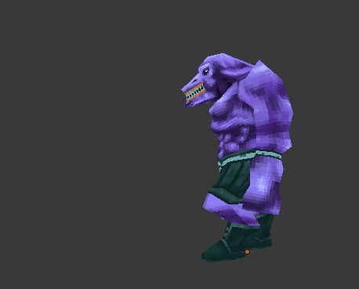A character designed for a first person shooter. The great challenge is to make the very low-poly mesh fold, twist and turn well in many different poses, holding and using many different types of weapons as well as running, jumping, strafing, backpedaling and falling over.
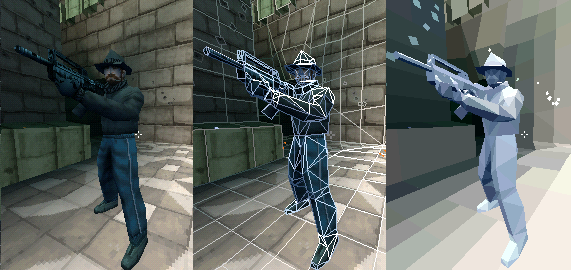 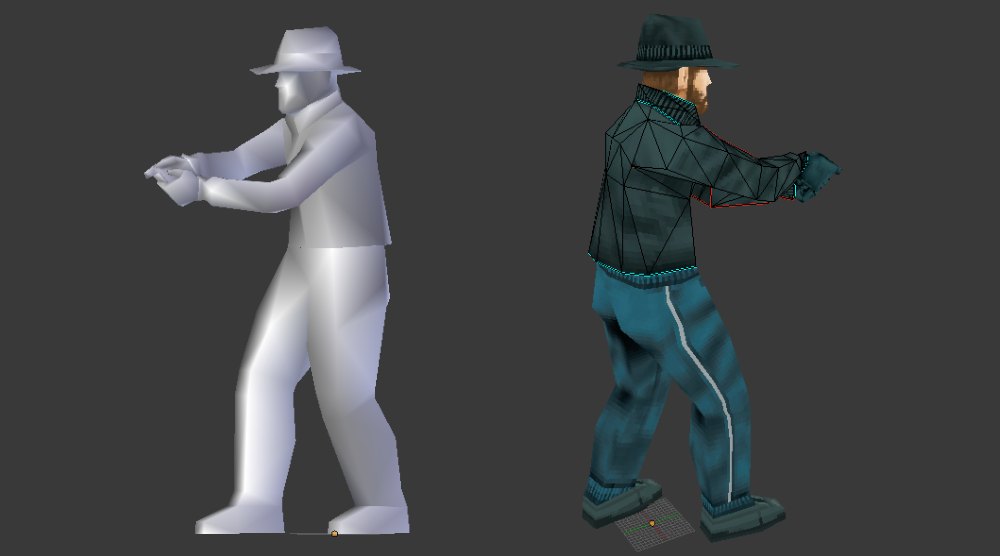 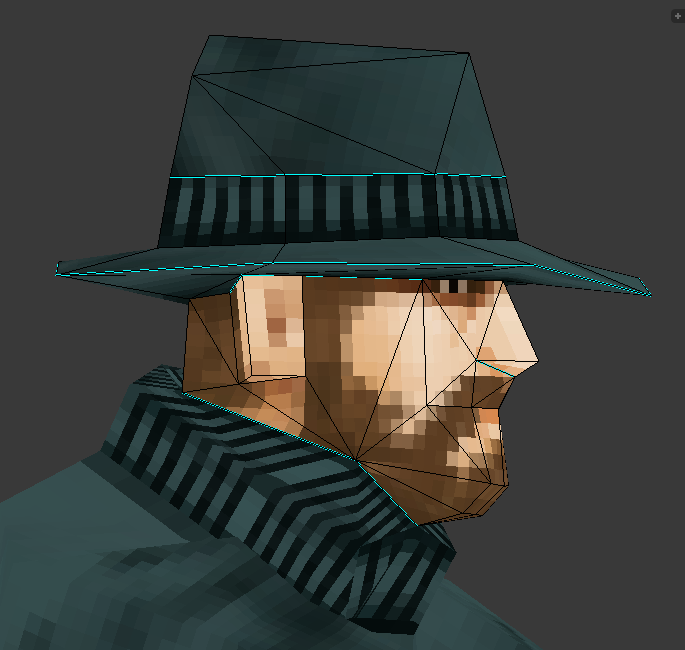An enemy with bird-like features, designed to be the equivalent of the "Jackal" from Halo.
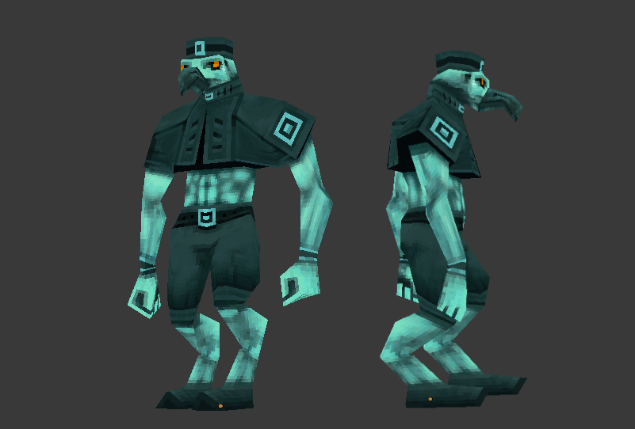 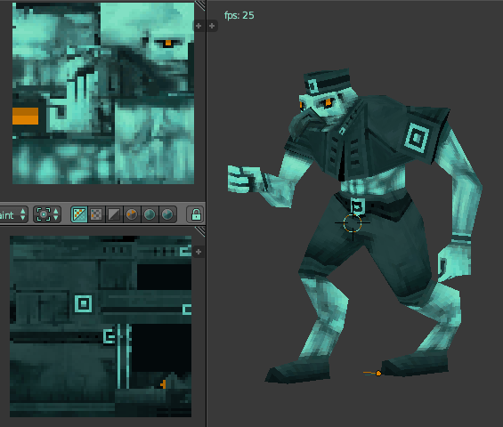Had an idea for a shmup/shooting game in the vein of Mushihimesame/Escatos where you play as a princess riding a flying seal.
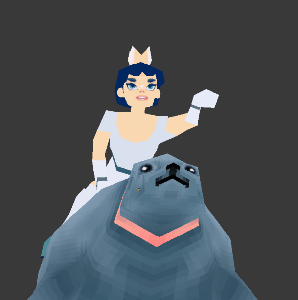 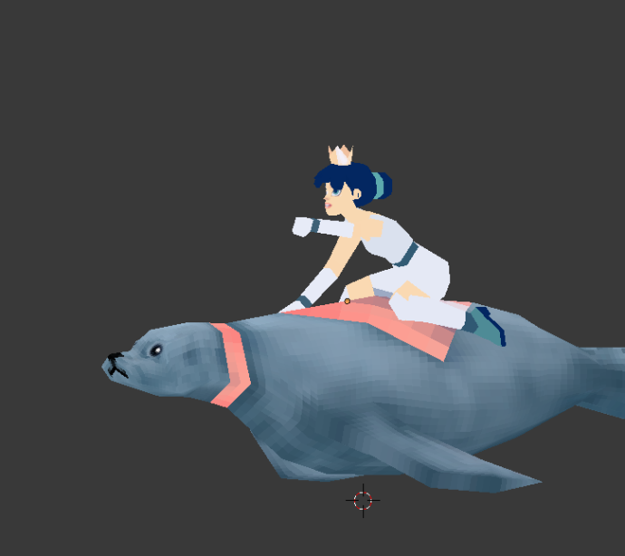 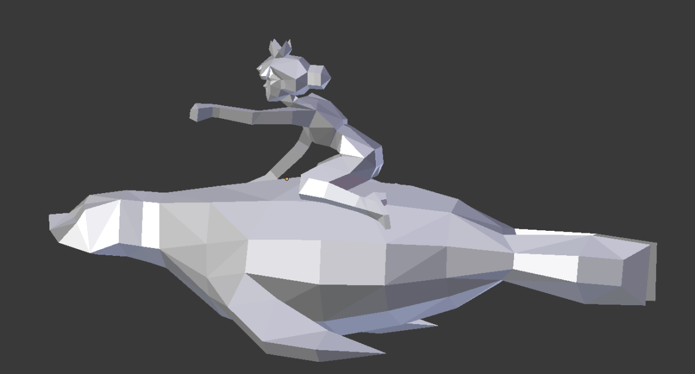Here are some weapon models to be used in the FPS project. These are also rigged and have animated firing sequences.
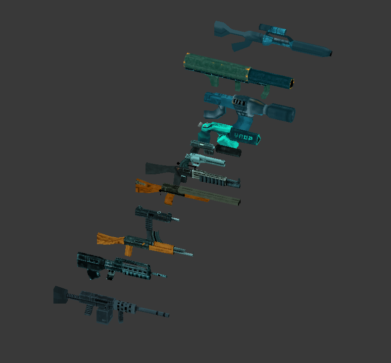 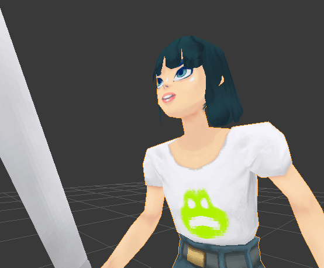
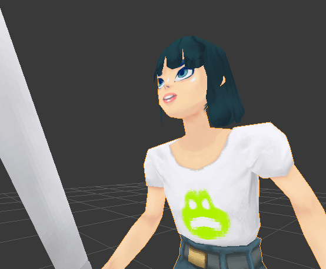
In-engine footage. ( Please ignore the important text, it's not important.)
It'sa me... Seal Mario?
More to come soon...